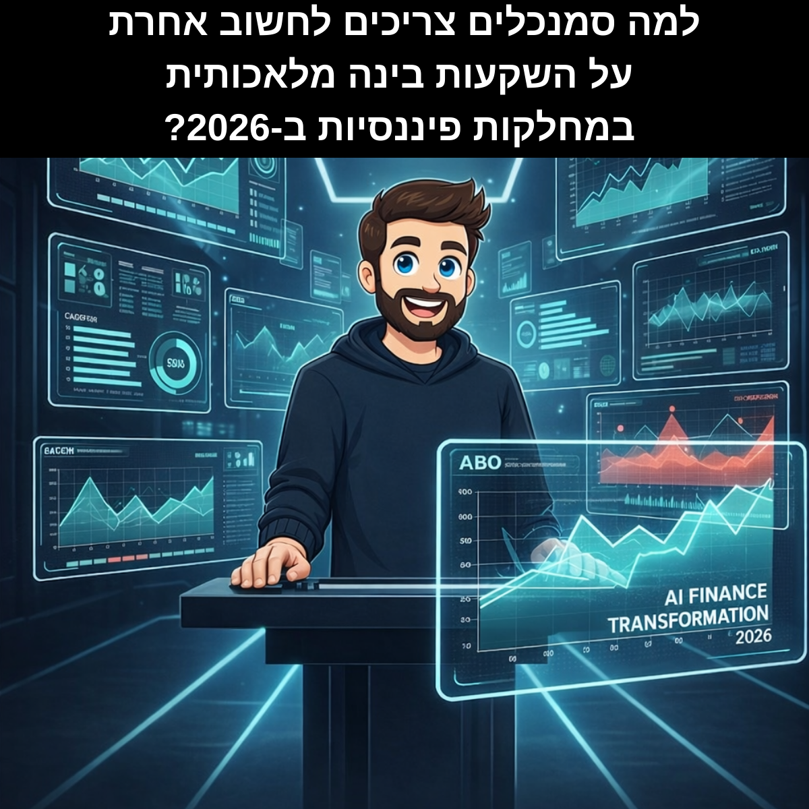

ב-2026 מנהלי כספים ו-CFOים לא יכולים להרשות לעצמם להישאר בשלב הפיילוטים וה-POC. הם חייבים להראות החזר השקעה אמיתי (ROI) מאוטומציה פיננסית ומבינה מלאכותית.
בעולם שבו כל החלטה פיננסית חייבת להיות ניתנת להסבר, לביקורת ולהגנה – נתונים מפוזרים, תהליכים לא מתועדים ואי-בהירות בבעלות ואחריות יחנקו כל יוזמת AI טובה.
ההבדל בין ארגון שמצליח להטמיע בינה מלאכותית בפייננס לבין כזה שנשאר מאחור אינו בחדשנות הטכנולוגיה, אלא בבסיס שעליו היא נשענת. בשנה זו, יותר מאי פעם, יהיה חשוב להבין שהשקעות אלו הן לא "נחמד להיות" אלא דרישה תפעולית ורגולטורית בסיסית.
הבסיס לכל בינה מלאכותית בתחום הפייננס הוא יישור נתונים בין ERP, CRM, מערכות גבייה, בילינג, פרויקטים ו-AP/AR, במיוחד בארגונים עם כמה ERPs במקביל.
בלי single source of truth (מקור אמת יחיד), AI לא יודע על מי לסמוך, והתוצאה היא:
הגדרת מערכת מקור לכל מידע רגיש (לקוח, יתרות, תנאי אשראי) כדי למנוע סתירות בין CRM ל-ERP. כאשר יש שתי מערכות שונות המספרות סיפור שונה על אותו לקוח, בינה מלאכותית מבלבלת ותוצאותיה בלתי אמינים.
יישור הגדרות DSO (Days Sales Outstanding), Churn, ARR (Annual Recurring Revenue), CAC (Customer Acquisition Cost) וכל KPI פיננסי בין מחלקות, כדי ש-AI יוכל לבצע אוטומציה וניתוח ללא פרשנות שונה בכל צוות.
זכרו: כשלכל צוות יש "פרשנות משלו" של מה זה ARR או DSO, הנתונים הופכים לבלתי שמישים. התחייבות לשפה מאוחדת היא למעשה התחייבות ל-AI שעובד.
וידוא שכל מערכת רלוונטית נגישה ל-AI עם הרשאות מתאימות, כולל לוגים ותיעוד גישה. בלי זה אין זרימת נתונים ואין אוטומציה פיננסית.
הבעיה העיקרית של צוותי כספים היא לא חוסר סקרנות, אלא ניהול סיכונים – פרטיות, רגולציה וביקורת. לכן צריך הכשרה ייעודית לפייננס ולא קורס גנרי בבינה מלאכותית לכל הארגון.
להבין ש-LLM מייצר טקסט הסתברותי, לא "אמת חשבונאית", ולכן לא להשתמש בו כ-source of record לדוחות כספיים. הפרדה זו פשוטה להבנה אבל קשה להטמעה בתרבות ארגונית.
לחישובים כמו לוחות סילוקין, NPV, IRR או מודלים תחזיתיים – יש לשלב קוד (Python) או מערכות BI ולא לסמוך על טקסט בלבד.
תיעוד פרומפטים, תשובות, הנחות עבודה ותאריכים כדי שניתן יהיה לשחזר החלטות ולהראות לרואי חשבון מאיפה הגיע מספר מסוים. בעולם בו רגולטורים ורואי חשבון משאלים שאלות, "AI אמר לי" זה לא תשובה.
ב-2026 SOPs (Standard Operating Procedures) הם כבר לא "מסמך נהלים משעמם", אלא חומר אימון לסוכני AI שיבצעו עבודה פיננסית שוטפת.
תיעוד התהליכים הוא מנוע האוטומציה של מחלקת הכספים שלכם. בלי SOPs מפורטים וברורים, סוכני AI הם חסרי כיוון.
לתעד את הדרך האמיתית שבה הצוות מבצע גבייה, סגירת חודש, התאמות בנק, הכרה בהכנסה ועוד – כולל קיצורי דרך ותסריטי "אם-אז".
להגדיר היכן נדרש אישור מנהל, באיזה שלב עוברים מה-AP (Accounts Payable) ל-Controller, ומהם ה-SLAs (Service Level Agreements) לכל צעד.
להגדיר בבירור אילו חלקים בתהליך מבוססי חוקים קשיחים (Rule-based) ואילו דורשים שיפוט מקצועי של מנהל כספים.
במקום להביא "גורו AI" חיצוני שלא מכיר את העסק, ארגונים מצליחים מקדמים אנשי פייננס חזקים לתפקידי AI פנימיים ומגבים את התפקיד המקורי שלהם.
זיהוי Use Cases משמעותיים כמו אוטומציית גבייה, Forecasting חכם, ניתוח Variance, תמחור דינמי ועוד. הם הגשר בין מה שטכנולוגיה יכולה לעשות למה שהעסק באמת צריך.
התאמת Workflows כדי לשלב בהם AI בצורה בטוחה, מדידה וניתנת לבקרה.
ניצול המעמד הפנימי שלהם כמקור סמכות אמין, שמרגיע התנגדויות ומלווה את הצוות בשינוי צורת העבודה.
השקעות עם ROI רך (יישור נתונים, תיעוד תהליכים, הכשרה) הן התנאי ההכרחי ל-ROI הקשה של אוטומציה עמוקה יותר, חיזוי מדויק יותר וניתוחי רווחיות מתקדמים.
זהו "קריאת ההשכמה" – אם הנתונים והתהליכים לא מסודרים, הארגון פשוט יישאר מאחור בגל ה-AI הבא. לא כי הטכנולוגיה לא זמינה או שהמחיר גבוה מדי, אלא כי אין לך אפילו קרקע יציבה עליה לעמוד.
ברוב המקרים, הצעד הראשון הוא מיפוי ואיחוד מקורות הנתונים הפיננסיים וקביעת single source of truth למדדים הקריטיים של הארגון. במקביל, מומלץ לזהות "אלוף AI" פנימי מהפייננס שילווה את התהליך.
הסיכון הגבוה ביותר הוא שימוש ב-LLM כ-"מחשב כיס" או מקור אמת לחישובים ולדוחות כספיים בלי בדיקה נוספת. כל שימוש שמשפיע על דיווח חיצוני או ציות רגולטורי דורש מדיניות ברורה, סביבה מאובטחת ותיעוד מלא.
קודם מודדים שיפור בתהליכים – קיצור זמני סגירת חודש, פחות טעויות ידניות, שיפור ב-DSO או ב-Forecast Accuracy. לאחר מכן מתרגמים לכסף: חיסכון שעות עבודה, צמצום ריביות, שיפור תזרים מזומנים ועלייה ביכולת קבלת החלטות.
לא תמיד. בהרבה ארגונים מספיק לבחור מקור אמת למערכות המרכזיות, ליצור שכבת אינטגרציה טובה ו-APIs נגישים. הפוקוס הוא על איכות ויישור נתונים, לא על פרויקט ענק שאף פעם לא נגמר.
אם הארגון שלכם רוצה לבנות אסטרטגיית AI לפייננס שיושבת על נתונים מסודרים, תהליכים מתועדים ואימפלמנטציה אמיתית – לא רק פיילוט נוצץ – זה הזמן לפעול.
ליווי ממוקד של AI Finance Transformation יכול לעזור ל-CFOים וצוותי כספים לעבור משלבי ניסוי לפעולה, עם Use Cases ברורים, תיעדוף נכון ויישום שמייצר ROI מדיד.
התייעצו עם המומחה למד את הקורסרונן עמוס
CPA | AI Finance Transformation Expert
עוזר ל-CFOים וצוותי כספים להטמיע בינה מלאכותית בצורה נכונה